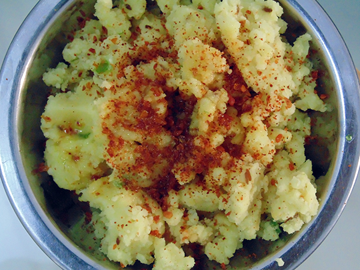

Rice flour khichu recipe |
| Rateing |
| prep time:10 minit |
| cook time:20 minit |
| total time:30 minit |
|  |
Ingredients: |
5 cup Water
2 cup Rice flour
Salt to taste
¼ tsp Baking Soda
2 green chili (fine chopped)
1 tsp Cumin seeds
Achar Methi masala according to taste
1 tbsp oil
|
Instructions: |
|
Heat water and add cumin seeds, green chili, baking soda and salt in it.
Boil water in a pan for 10-15 minutes at medium to slow flame.
Now mix flour slowly and stir continuously using wooden spoon to prevent again lump.
Lid pan and keep this pan on a stove for 1 -2 minutes at slow flame.
Mix it every 15-20 seconds.
Serve in a dish and pour methi masala and oil in it.
Khichu is ready for serve. |
video: |